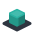
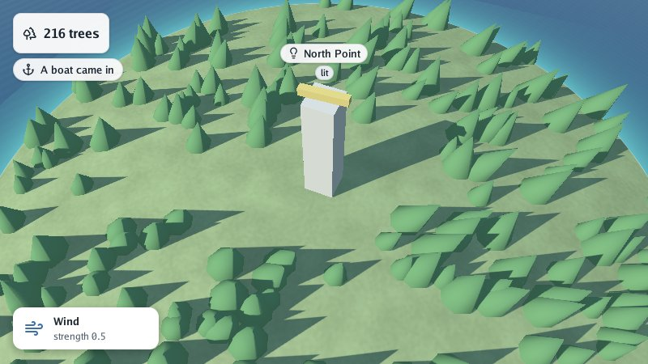

Go Renderer draws pictures with a computer’s graphics card: 3D scenes of islands, towns, forests, the sea and the sky, by day and by night, and the flat buttons and panels other programs put over them. It is written in Go, to learn how 3D graphics work from the inside.

You describe what is in the scene (a hill here, a tower there, the sun this high) and Go Renderer draws it, sixty times a second, as you fly round it, walk on it or look at it as a map. It can also open whole scenes made by other tools, in the glTF format.
Pick the line that sounds like you.
| If you… | Read | Time |
|---|---|---|
| just want to see what it does | Try it without writing code | 2 min |
| are new to it and want to install it | Get started | 15 min |
| want to learn step by step | 🏴☠️ The quest: an island with a lighthouse, in 6 levels | 90 min |
| want to know how one part works | The guides: the viewer, labels, glTF, web, Android | — |
| are looking up a type or a function | The reference | — |
With Go installed and the project copied (see Get started), one command opens a made-up island to fly round:
go run ./cmd/visor -sample island
Drag to turn, scroll to come closer, Tab to walk, M for a map and N for the night. Any .glb file opens the same way: go run ./cmd/visor scene.glb.
The menu on the left (or the files in docs/) follows this order.
Start
Learn
Guides: how each part works
Reference
The project
| Word | What it means |
|---|---|
| Go | A programming language. To try these projects you install it once, from go.dev, and type go run … in a terminal. |
| Terminal | The window where you type commands: Terminal on macOS and Linux, PowerShell on Windows. |
| Repository | A project’s folder of files, kept on GitHub. git clone <address> copies it to your computer. |
| Scene | Everything a 3D picture holds: ground, houses, trees, the sea, the sky and the sun. |
.glb file |
A 3D scene in one file, in the open glTF format: many programs (Blender among them) open and write it. |
| Quest | The tutorial of these docs: short levels, each ending with something that works and an achievement. |
.glb files in the page, locking the pointer
for walking, the on-screen keyboard and the system clipboard at any time, WebGPU, and smaller
files with TinyGo. See in a web browser.Go Renderer is one of a family of small projects that work together:
| Project | What it does |
|---|---|
| Go Renderer (this one) | draws 3D scenes and flat interfaces |
| Go UI | buttons, panels and whole applications |
| Go UI for Android | Android apps that look like Android’s own |
| Go Sound | sound and music |
| Go Scene Builder | 3D scenes from a flat map |
| Go Simulator | simulations that change a scene |
| Go Terrain Simulator | ground shaped by rivers |
| Go Climate Simulator | weather and biomes |
| Go Flora Simulator | forests that grow |
| Go Urban Simulator | towns that grow |
| Go Motion Simulator | a scene that moves |
| Go for 3DS | Go on the Nintendo 3DS |
⚠️ All of them are educational experiments, written with an AI assistant and pending review by their author: good for learning and playing, not for production.